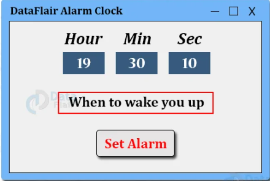
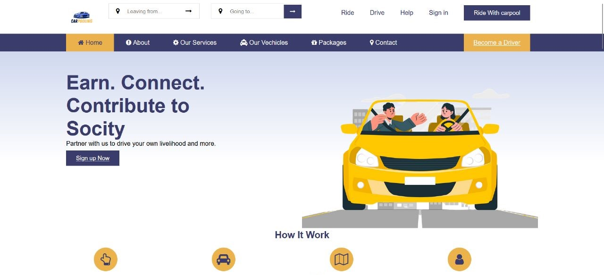

Projects
Alarm using Python
This project is to implement an alarm clock using Python. Tkinter which help us to build the project using the current date and time as well as to provide a user interface to set the alarm according to the requirement in 24-hour format.It allows users to set a specific time for the alarm to go off and produces a sound at the set time to wake the user up or remind them of an event.
Carpooling
The Carpooling Website Project is a web-based application designed to facilitate carpooling arrangements among individuals seeking to share rides for their daily commutes. The project utilizes HTML, CSS, and JavaScript to create an interactive and user-friendly platform.The project involves the creation of a website that allows drivers and passengers to connect and arrange shared rides to common destinations.
Smart Dustbin
The IoT-based Smart Dustbin project is a system designed to monitor and manage waste collection using Internet of Things (IoT) technology. The project utilizes a combination of hardware components, such as sensors and microcontrollers and to create a smart and efficient waste management solution.